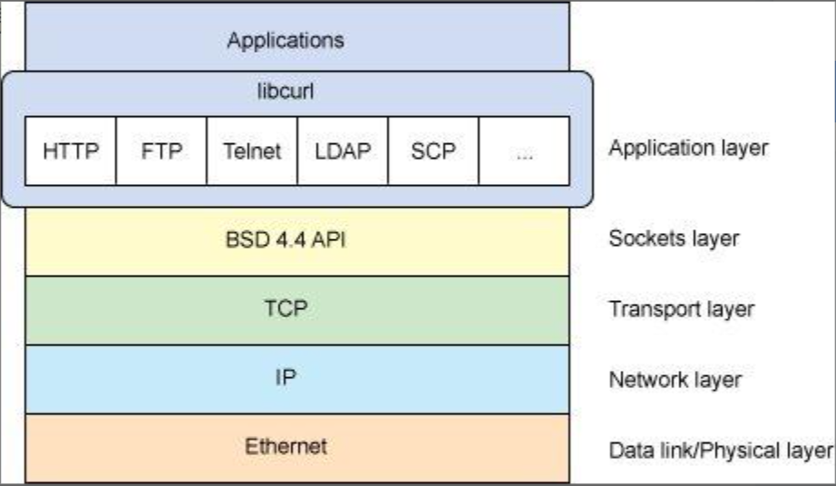
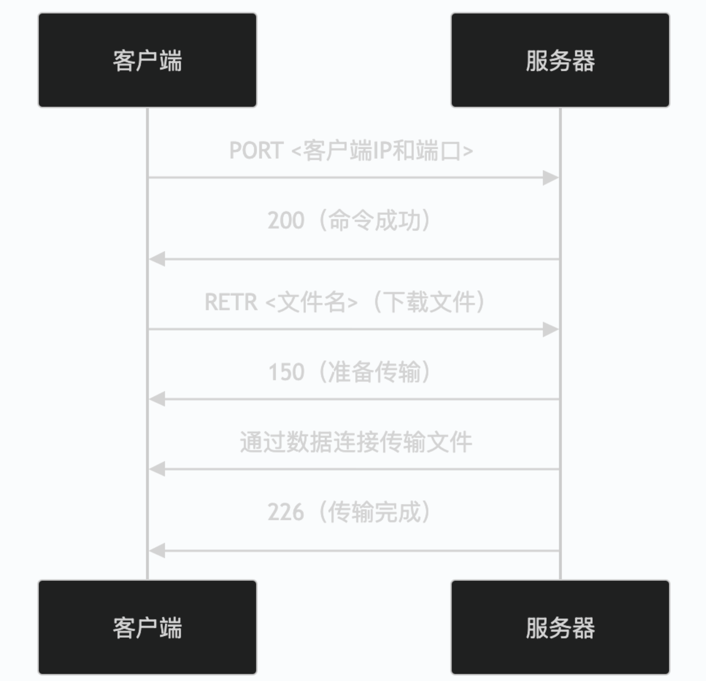
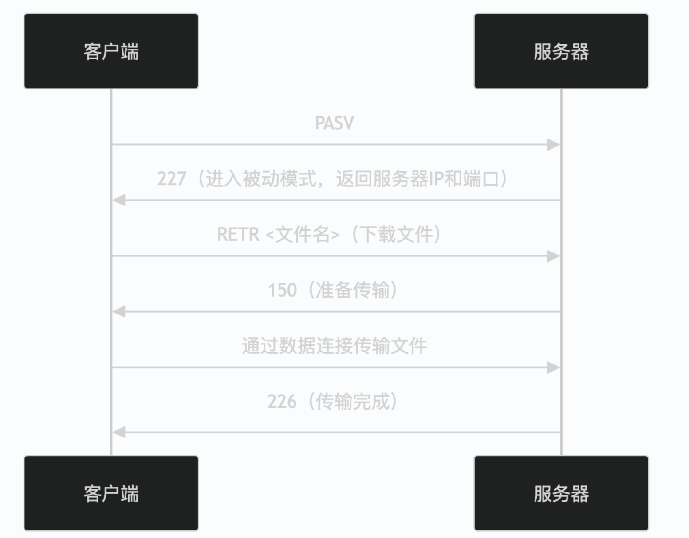

NAS技术概述及常见网络文件共享协议分析与比较
目录
1. 引言
随着数据量的爆炸式增长，无论是在企业环境还是家庭中，高效、安全、便捷的数据存储和共享方案变得至关重要。网络附加存储（NAS，Network Attached Storage）正是在这种需求下应运而生并普及开来的一种专用数据存储技术。它本质上是一台连接到网络的、具备独立操作系统和文件系统的专用计算机，其唯一的功能就是提供文件存储和共享服务。
与直接附加存储（DAS，Direct Attached Storage，如电脑内置硬盘或外接USB硬盘）不同，NAS 并非隶属于某一台特定的计算机。它通过网络（通常是TCP/IP网络）为网络中的所有授权用户提供集中的数据访问。用户可以通过各自的设备（电脑、手机、平板等）像访问本地硬盘一样访问NAS上的文件。这种架构带来了极大的灵活性和可扩展性，使其成为现代数据管理的核心组件之一。
要实现跨平台、跨设备的文件访问，NAS 依赖于一系列标准化的网络协议。这些协议定义了客户端设备如何请求文件、如何读取/写入数据、如何管理文件权限等一系列通信规则。在众多协议中，SMB、NFS、AFP、WebDAV 和 FTP 是最为常见和重要的五种。它们各自诞生于不同的技术背景，服务于不同的应用场景，也因此具备了独特的特点、优势和局限性。接下来，我们将对这五种技术进行深入的剖析和比较。
2. NAS技术概述
2.1 NAS简介和特点
网络附接存储（英语：Network Attached Storage，缩写：NAS）是一种文件级（与块级存储相对）的计算机数据存储服务器，它连接到计算机网络，并提供对异构网络用户的数据访问。它专门用于通过其硬件、软件或配置来提供文件服务。它通常作为专门制造的专用计算机设备制造。 NAS系统是包含一个或多个通常排列成逻辑存储器、冗余存储器或RAID存储驱动器的网络设备。NAS消除了从网络上的其他服务器提供文件服务的负担，它们通常使用网络文件共享协议（如NFS、SMB或AFP）提供对文件的访问。作为一种在多台计算机之间共享文件的便捷方法，NAS设备从1990年代中期开始开始流行起来。与同样提供文件服务的通用服务器相比，专用网络附加存储的潜在优势包括更快的数据访问、更简单的管理和简单的配置。
名称中带有“NAS”的硬盘驱动器在功能上与其他驱动器相似，但可能在固件、振动耐受性或功耗上有不同之处，以使其更适合在RAID阵列中使用，这些阵列通常用于NAS的实现当中。[1]例如，某些NAS版本的驱动器支持命令扩展以允许禁用扩展错误恢复。在非RAID应用中，磁盘驱动器竭尽全力成功读取有问题的存储块可能很重要，即使这一过程需要花费几秒钟。在适当配置的RAID阵列中，可以通过跨RAID集编码的冗余校验完全恢复单个驱动器上的单个坏块。如果驱动器花费几秒钟执行大量重试，则可能会导致RAID控制器将驱动器标记为“掉盘”，而如果它只是迅速回复数据块有校验和错误，则RAID控制器将使用另一个驱动器上的冗余数据纠正错误并继续工作。这样的“NAS”SATA硬盘驱动器可以用作个人电脑的映射网络驱动器，因为它只支持附加选项，无需任何问题或调整，并且质量标准要高于普通消费者级的驱动器（特别是有更高的平均故障间隔和更高的价格的）。
NAS的特点
- 地域安装地点不受距离的限制，具备磁盘阵列高容量、高效能和高可靠的所有主要特征；
- 方便使用简便，插上电源，接好网线，10min便可投入使用；在线增加设备，无需停顿网络而且与已建网络完全融合，保护原有投资；
- 模式存储采用RAID模式；
- 共享平台跨平台文件共享，支持Windows、NT、Unix 或Linux等操作系统；
- 操作系统独立的优化存储操作系统，完全不受服务器干预，有效释放带宽，可提高网络整体性能。集成本地备份软件，可实现无服务器备份。 日志文件系统和检查点设计，使数据恢复准确及时，双引擎设计理念，即使服务器发生故 障，用户仍可进行数据存取；
- 集中管理将不同系统平台下文件存储在一 台NAS中，方便网络管理员集中管理，降低维护成本。基于web的GUI管理界面使NAs设备的管理一目了然；自带支持多种协议的管理 软件，功能多样，支持日志文件系统，并一般集成本地备份软件。

2.2 NAS基本存储原理
NAS 是文件式数据的网络连接存储。它有三种主要存储方法：
- 文件存储
如果是文件存储方法，您可以将数据存储在文件中，将文件整合进文件夹，并将这些文件置于目录和子目录的层次结构下。这是一种非常热门且广为人知的存储技术。 - 数据块存储
数据块存储将文件分解为更小的数据块（或多个数据块），并将每个数据块单独存储在一个唯一地址下。计算机可以将数据块存储在设备上的任意位置。服务器的操作系统使用唯一地址将数据块重新组合到文件中。这比通过层次结构访问文件要快。 - 对象存储
对象是离散数据单元，存储时没有层次结构或结构。每个对象都包括数据、有关数据的描述性信息（元数据）和唯一标识号。根据此信息，系统软件可以找到并访问对象。
文件、数据块和对象存储对比 ：
每种存储类型都可以不同方式使用。例如，文件存储可用于本地文件共享，数据块存储可用于高性能应用程序。另一方面，您可以使用对象存储来存储非结构化数据，例如电子邮件、视频、图像文件、网页和物联网（IoT）产生的传感器数据。
2.3 NAS工作原理
NAS的工作原理涉及多个层次，包括物理层、数据链路层、网络层和传输层。这些层次共同建立了网络连接，使得多个计算机能够通过网络访问同一个存储设备。NAS协议支持多种网络协议，如TCP/IP、FTP、HTTP等，因此可以在不同的操作系统和网络环境中使用。常见的NAS协议包括NFS（Network File System）、SMB/CIFS（Server Message Block/Common Internet File System）、AFP（Apple Filing Protocol）等。这些协议各有特点，用户可以根据需求选择合适的协议。 [2]
NAS协议的框架结构包括基础架构、文件系统、存储协议、安全认证和管理接口。基础架构用于建立网络连接，文件系统用于管理NAS设备上的文件和目录，存储协议用于访问和管理NAS设备上的存储资源，安全认证用于对NAS设备上的资源进行身份验证和访问控制，管理接口用于管理和配置NAS设备。应用服务则提供文件共享、打印服务、数据备份、多媒体服务等功能。
3.常见网络文件共享协议
3.1 SMB协议
SMB 是一个历史悠久且应用最广泛的网络文件共享协议，最初由IBM开发，后来由微软进行了极大的扩展和推广，并将其更名为 CIFS（Common Internet File System）。如今，SMB 已经成为 Windows 生态系统的标准文件共享协议，并且在 macOS、Linux 等其他操作系统中也得到了广泛支持（通过Samba等开源实现）。
3.1.1.技术特点
- 客户端/服务器模型： SMB 采用请求-响应模式。客户端（如你的电脑）向服务器（NAS设备）发送命令请求（如“读取文件 a.txt”），服务器处理请求后返回数据或状态。
- 功能丰富： SMB 不仅仅是文件传输协议。它提供了一整套丰富的网络服务，包括：
- 文件和打印机共享： 这是其核心功能，允许多个用户同时访问和修改文件，并共享网络打印机。
网络浏览和命名： 允许客户端发现网络上的可用资源（服务器和共享文件夹）。 - 身份验证和授权： 支持基于用户和组的权限管理，可以精确控制每个用户对不同文件和文件夹的访问级别（只读、读写、完全控制等）。
- 文件锁定机制： 支持机会性锁定（OpLocks），能有效防止多个用户同时修改同一文件导致的数据冲突，并能通过客户端缓存提升性能。
- 变更通知： 客户端可以向服务器注册，当文件或目录发生变化时，服务器会主动通知客户端，这对于需要实时同步的应用非常有用。
- 文件和打印机共享： 这是其核心功能，允许多个用户同时访问和修改文件，并共享网络打印机。
- 有状态协议： 客户端和服务器之间会维持一个持续的连接状态。服务器知道哪些客户端打开了哪些文件，这为实现高级功能（如文件锁定）提供了基础。
持续演进： SMB 协议经历了多个版本的迭代：- SMB 1.0 (CIFS)： 早期的版本，设计较为陈旧，性能和安全性较差，存在著名的“WannaCry”勒索病毒所利用的漏洞。现已基本被弃用。
- SMB 2.x： 随 Windows Vista 引入的重大改进。大幅减少了协议的“话痨”（Chattiness）特性，将多个命令打包成一个请求发送，显著提升了在高延迟网络（如广域网）下的性能。
- SMB 3.x： 随 Windows 8 和 Windows Server 2012 引入，带来了革命性的新功能，使其成为现代化、高性能的协议。关键特性包括：
- SMB Multichannel： 如果客户端和服务器之间有多条网络路径，SMB 3.x 可以同时利用这些路径来传输数据，显著提高吞吐量和链路冗余。
- SMB Direct： 支持 RDMA（远程直接内存访问）网卡，允许数据直接在服务器和客户端的内存之间传输，绕过CPU和操作系统内核，极大地降低了延迟和CPU占用率。
- 端到端加密： 支持 AES-128/256 算法对整个SMB通信会话进行加密，有效防止数据在传输过程中被窃听。
- 透明故障转移： 在集群环境中，如果一台NAS节点发生故障，客户端的连接可以无缝地自动切换到另一台节点，保证服务的连续性。
3.1.2. 优势
- 原生兼容性与易用性： 在 Windows 环境中是原生支持的，无需安装任何额外软件。用户只需在文件资源管理器中输入
\\NAS_IP即可访问，体验与本地磁盘无异。 - 强大的生态系统： 作为事实上的标准，几乎所有的商用NAS设备、操作系统（通过Samba）和网络应用都支持SMB。
- 功能全面且强大： 提供了精细的权限控制、文件锁定、打印服务等企业级功能，能够满足复杂的应用需求。
- 性能优越（SMB 3.x）： 现代版本的SMB在性能上非常出色，尤其是在万兆以太网和RDMA技术的加持下，可以提供接近本地存储的性能。
- 安全性高（SMB 3.x）： 端到端加密和安全的身份验证机制（如Kerberos）为数据安全提供了有力保障。
3.1.3. 劣势
- 历史包袱（SMB 1.0）： SMB 1.0 的安全漏洞给整个协议族带来了负面声誉，尽管现代版本已完全修复，但仍需警惕旧设备或错误配置可能带来的风险。
- 配置复杂性： 在混合操作系统环境中（如Windows、Linux、macOS共存），配置Samba服务器以实现完美的兼容性和权限统一可能相对复杂，需要一定的专业知识。
- 协议“话痨”问题（旧版本）： SMB 1.0 在高延迟网络下性能急剧下降，因为它需要大量的请求-响应往返来完成一个简单的操作。虽然SMB 2.x及以后版本已极大改善，但这个印象依然存在。
3.2 NFS协议
NFS 是由 Sun Microsystems（现为Oracle）于1984年开发的，主要用于在 Unix 和类 Unix 系统（如 Linux、BSD）之间共享文件。它是 Unix/Linux 世界的“原生”文件共享协议，设计哲学与SMB有很大不同。
3.2.1 技术特点
NFS（Network File System）是一种主要用于 Unix 和 Linux 系统的分布式文件系统 [3]。NFS 允许不同设备通过网络共享文件，使用户能够将远程文件系统挂载到本地系统中，像操作本地文件一样访问远程数据。
NFS目前有多个版本，最常用的是 NFSv3和 NFSv4。NFSv3在性能和效率上具有良好的表现，而 NFSv4 则增强了安全性，支持状态协议和内建的 ACL（访问控制列表）管理。NFSv4还集成了对 Kerberos身份认证的支持，提升了协议的安全性。NFS 适合在局域网中进行大规模、高并发的数据共享，尤其在 Linux/Unix 环境中表现出色。
NFS协议的发展始于1980年代，最早的NFSv2是基于无状态的设计，简单但功能有限。NFSv3 对大文件支持进行了改进，并提高了性能，成为许多企业和个人的首选。而 NFSv4 增加了状态管理，支持防火墙穿越以及更好的安全性，特别适合在互联网上的使用。
3.2.2 优势
- Unix/Linux环境下的王者： 在纯Linux/Unix环境中，NFS的配置和使用非常简单直接，性能也经过了充分优化。它是高性能计算（HPC）、虚拟化（如VMware的数据存储）等场景的首选。
- 性能高效： 特别是在处理大文件读写时，NFS通常表现出非常高的吞吐量。其设计开销相对较小。
- 资源消耗低： 相对于功能复杂的SMB，NFS协议本身及其服务器实现（如Linux内核NFS服务器）通常更轻量，系统资源占用较少。
- 开源和标准化： NFS是一个开放的标准（RFC文档定义），有大量的开源实现，不存在厂商锁定的问题。
3.2.3 劣势
- Windows兼容性差： 虽然Windows提供了NFS客户端和服务端功能（Services for NFS），但其配置复杂，性能和稳定性通常不如SMB。它不是Windows的首选方案。
- 默认安全性弱（旧版本）： NFSv3及之前的版本默认依赖于基于IP地址的
hosts.allow/deny进行访问控制，并通过信任客户端传递的UID/GID来进行权限判断。这种机制很容易被伪造，安全性较差。要实现安全，必须配置复杂的Kerberos。 - 权限映射问题： 在跨域或没有统一用户管理的网络中，客户端的UID/GID与服务器的UID/GID可能不匹配，导致权限混乱。例如，客户端的
UID 501（可能是userA）在服务器上可能对应userB，或者根本不存在。NFSv4通过ID-Mapping守护进程（idmapd）尝试解决这个问题，但配置依然不直观。 - 小文件性能问题： 由于其设计，NFS在处理大量小文件时，性能可能不如SMB。
3.3 AFP协议
3.3.1 技术特点
苹果归档协议 （英语：Apple Filing Protocol，缩写 AFP ）也称 Apple文件协议 、 Apple归档协议 ，以前称为AppleTalk Filing Protocol，它是一个专有网络协议，并且是 Apple File Service （苹果文件服务，缩写 AFS ）的一部分，为Mac OS和经典Mac OS提供文件服务。在macOS中，AFP是受支持的数种文件服务之一。AFP目前支持Unicode文件名、POSIX和访问控制表权限、资源分支、扩展属性名称、高级文件锁定。在MAC OS 9及更早版本中，AFP是文件服务的主要协议。
在安全与权限管理方面，AFP 提供了较完善的认证机制，从早期的用户名密码认证发展到支持 DHX2 加密认证和 Kerberos 网络身份验证协议，同时与 macOS 的 ACL（访问控制列表）集成，可实现细粒度的权限控制。AFP 也支持文件级与记录级锁定，使多个用户能够在网络上协同处理文件而不产生冲突。此外，它支持断点续传功能，文件传输中断后可以自动恢复，提高了网络使用的稳定性。在性能方面，AFP 对 Mac 系统的缓存机制进行了优化，尤其在局域网环境下具有较高的传输效率。同时，它与 macOS 的 Spotlight 搜索系统紧密集成，允许用户在网络卷上进行快速文件搜索，也正因这种深度整合，AFP 曾是 Time Machine（苹果系统自带的备份工具）所使用的默认网络协议。
然而，随着网络环境的演进和跨平台需求的增加，AFP 的局限性逐渐显现。它主要服务于苹果生态系统，对 Windows、Linux 等系统兼容性较差。自 macOS 10.9（Mavericks）开始，苹果逐步用 SMB2/SMB3 协议取代 AFP，后者成为默认的文件共享协议。相比 AFP，SMB 具有更好的跨平台支持、更高的安全性以及更高的传输效率。目前 AFP 已基本被淘汰，仅在某些旧版本 macOS 系统或老款 Time Machine 设备上仍被使用。总体而言，AFP 的主要特点可以概括为：专为 Mac 文件系统设计、完整支持资源叉和元数据、支持 Unicode 文件名、提供强大的权限与锁定机制、支持断点续传和网络搜索。虽然它如今的使用范围逐渐缩小，但在苹果生态发展的历史中，AFP 曾是 Mac 网络文件共享的重要支柱。
3.3.2 优势
- 完美的Mac兼容性（历史）： 在macOS 10.8 (Mountain Lion)及之前的时代，AFP在性能、稳定性和功能完整性上全面优于当时Mac上的SMB实现（Samba）。
- 无缝的用户体验： 对于Mac用户来说，连接AFP服务器非常直观，且所有Finder的功能都能得到完美支持。
- 可靠的Time Machine备份： 长期以来，是唯一被官方完全支持的网络Time Machine备份方案
3.3.3 劣势
- 已被苹果弃用： 这是AFP最大的“劣势”。从macOS 10.9 (Mavericks)开始，苹果将默认的文件共享协议从AFP转向了SMB2。从macOS 11 (Big Sur)开始，苹果官方已明确宣布弃用AFP。虽然仍可连接，但不再是推荐或积极开发的技术。
- 专有协议与跨平台性差： AFP是苹果的私有协议。虽然有开源实现如Netatalk，使得Linux服务器可以提供AFP服务，但其配置和维护相对小众。Windows平台几乎不支持AFP。
- 性能不再领先： 随着苹果对自家SMB客户端的不断优化和SMB 3.x协议的成熟，现代macOS通过SMB连接NAS的性能和稳定性已经追上甚至超越了AFP。
- 未来不确定： 由于官方弃用，该协议不会再有新的功能更新，且未来可能在macOS中被彻底移除。
3.4 WebDAV协议
3.4.1 技术特点
WebDAV，全称为 Web-based Distributed Authoring and Versioning，是一种基于 HTTP 协议的扩展协议，旨在通过网络实现分布式文件管理与协作。WebDAV 协议最初由互联网工程任务组（IETF）提出，并在 RFC 4918 中正式定义。它的设计目标包括提供对文件的创建、编辑、删除和读取等基本操作的支持，同时解决多用户协作中的同步和冲突问题。
具体来说，WebDAV 通过增强 HTTP 协议，加入了一些额外的方法与头信息，使得用户能够在远程服务器上执行文件操作。这些扩展包括 PROPFIND、PROPPATCH、MKCOL、COPY、MOVE 等方法，用于支持元数据管理、目录操作和文件移动等功能。
WebDAV 的功能集中在以下几个方面：
-
文件管理 ：支持在远程服务器上创建、读取、更新和删除文件。
举例来说，一家设计公司通过 WebDAV 实现了设计文档的集中存储与管理。设计师在本地编辑后，可以直接将修改的文件上传到 WebDAV 服务器，其他团队成员即时获取更新版本。
-
目录管理 ：提供对目录结构的操作能力，包括创建、删除和检索目录。
假设一个在线教育平台通过 WebDAV 管理课程素材，管理员能够轻松创建新的课程文件夹，上传讲义和视频资源。
-
文件版本控制 ：虽然原生 WebDAV 协议并未内置复杂的版本控制，但与 DeltaV 等扩展协议结合使用，可以支持文件的版本管理。
某软件开发团队利用 WebDAV+DeltaV 实现了代码文档的版本控制，每次提交更改都会生成新的版本，方便回溯历史记录。
-
元数据支持 ：允许用户定义和操作文件的元数据。例如，设置文件的标题、作者或自定义标签。
在一个数字图书馆中，WebDAV 被用来存储电子书，同时为每本书附加元数据（如作者、出版年份），便于快速检索。
3.4.2 优势
- 极佳的互联网可访问性： 这是WebDAV最突出的优点。无论你身在何处，只要能上网，就能通过一个URL访问你的文件，无需配置复杂的VPN或端口转发。
- 安全性： 因为可以运行在HTTPS之上，所有传输的数据都可以通过TLS/SSL进行加密，保证了在公共网络上传输的安全性。
- 跨平台兼容性好： 几乎所有现代操作系统都内置了或可以轻易获得WebDAV客户端支持。
- 配置简单： 在服务器端，许多Web服务器（如Apache, Nginx）通过模块即可轻松开启WebDAV服务。
3.4.3 劣势
- 性能相对较低： 由于每次操作都涉及到HTTP请求的开销（头部解析、状态码处理等），WebDAV在处理大量小文件或需要高吞吐量的场景下，性能远不如SMB或NFS这类二进制协议。它更适合文档管理，而非大规模数据传输。
- 功能相对基础： 相比SMB和NFS，WebDAV提供的文件系统语义较为有限。例如，它没有等同于SMB机会锁或NFS租约的高级缓存机制，这进一步影响了其性能。
- 客户端支持不一： 虽然各平台都有客户端，但其实现质量和用户体验参差不齐。例如，Windows的“网络位置”对WebDAV的支持就不如商业客户端（如RaiDrive, NetDrive）稳定和高效。
- 不适合作为系统级文件共享： WebDAV通常不用于挂载为系统盘或运行需要高性能I/O的应用程序（如数据库、虚拟机），它更像一个“网络驱动器”或同步工具的后端。
3.5 FTP协议
3.5.1 技术特点
FTP（File Transfer Protocol，文件传输协议）是一种基于客户端/服务器（C/S）模式的应用层协议，用于在网络中的主机之间可靠地传输文件。它是互联网上最早使用、最广泛的文件传输协议之一，运行在 TCP 协议之上，默认使用端口 21 和 20 。
FTP 使用 TCP 协议 进行数据传输，保证了文件传输过程中的数据可靠、有序、不丢失。与 UDP 相比，FTP 通过 TCP 的三次握手、流量控制与重传机制确保传输的完整性。FTP使用了两个并行的TCP来传输文件：一个是控制连接（port:21），一个是数据连接(port:20)。控制连接用于在两个主机之间传输控制信息，如口令，用户标识，存放、获取文件等命令。数据连接用于实际发送一个文件,发送完文件之后数据连接会关闭。因为FTP协议使用一个独立的控制连接，所以，也称FTP的控制信息是带外（out-of-band）传送的。

FTP支持两种方式的传输：文本（ASCII）方式和二进制（Binary）方式。通常文本文件的传输采用ASCII方式；而图象、声音文件、加密和压缩文件等非文本文件采用二进制方式传输；如果为了从一个系统上传输文件而使用了与本地系统不同的计算机字节位数，那么就必须使用Tenex模式。FTP以ASCII方式作为默认的文件传输方式。
FTP有两种传输模式——主动（FTP Port）模式和被动（FTP Passive）模式。主动模式（Active Mode）： 服务器主动从其20端口连接到客户端指定的一个高位端口。这种模式在客户端位于NAT或防火墙后时会遇到问题。被动模式（Passive Mode）： 客户端主动连接到服务器指定的一个高位端口。这是目前更常用的模式，因为它对客户端侧的防火墙更友好。


3.5.2 优势
- 简单、直接、高效： 对于批量传输大文件，FTP非常高效。其协议开销相对较小，能够很好地利用网络带宽。
- 广泛支持： 几乎所有可以联网的设备，从PC到嵌入式系统，都有FTP客户端或服务器的实现。它是跨平台文件交换的一个“通用语言”。
- 成熟稳定： 作为一个存在了半个世纪的协议，FTP的实现非常成熟和稳定。
3.5.3 劣势
- 安全性极差： 标准的FTP在传输用户名、密码和文件内容时，全部使用明文！在任何不受信任的网络上使用FTP都等同于将你的数据和凭证公之于众。这是一个致命的缺陷。
- 对NAT和防火墙不友好： 双通道架构，特别是主动模式，使得FTP很难穿越现代网络中普遍存在的NAT设备和防火墙。被动模式虽有所改善，但仍需在防火墙上开放一个端口范围。
- 功能单一： FTP只是一个“文件传输”协议，而不是“文件系统”协议。你无法像使用SMB或NFS那样直接在FTP服务器上编辑文件或运行程序。你必须先下载文件，在本地编辑，然后再上传回去。
4.网络文件共享协议分析与比较
| 对比项目 | SMB | NFS | AFP | WebDAV | FTP |
|---|---|---|---|---|---|
| 主要平台 | Windows（兼容 macOS、Linux） | Linux/Unix（macOS 也支持） | macOS 专用 | 跨平台（HTTP 协议） | 跨平台 |
| 默认端口 | TCP 445 | TCP/UDP 2049 | TCP 548 | TCP 80/443（HTTP/HTTPS） | TCP 21（控制）+20（数据） |
| 传输层协议 | TCP | TCP/UDP | TCP | HTTP/HTTPS (TCP) | TCP |
| 身份认证 | NTLM、Kerberos、LDAP | 基于系统账户或 Kerberos | 用户名/密码、DHX2、Kerberos | HTTP Basic/Digest、OAuth、SSL 证书 | 用户名/密码（明文），可扩展 FTPS |
| 加密安全性 | SMB3 支持端到端加密 | NFSv4 支持 Kerberos 加密 | 早期弱，后期支持 DHX2/Kerberos | HTTPS 支持 TLS 加密 | FTP 明文，FTPS/SFTP 才安全 |
| 性能 | 高（特别在局域网） | 极高（Linux 内核级支持） | 较高（针对 macOS 优化） | 中等（HTTP 传输效率有限） | 一般（TCP 传输+控制开销大） |
| 跨平台兼容性 | 非常好（Windows/macOS/Linux 全支持） | 一般（Windows 支持差） | 差（仅 macOS） | 很好（所有平台支持） | 很好（所有平台支持） |
| 是否支持文件锁定 | 支持（共享锁/独占锁） | 支持 | 支持 | 限制（取决于实现） | 不支持协作锁 |
| 支持文件权限控制 | NTFS ACL 权限丰富 | POSIX 权限（简单高效） | macOS ACL 权限 | 依赖 Web 服务器控制 | 有限（主要账户级） |
| 典型用途 | Windows 网络共享、NAS、企业环境 | Linux 集群、服务器共享目录 | 老版 macOS 文件共享、Time Machine | 云存储、Web 文档协作 | 网站上传、远程下载 |
| 适合的网络环境 | 局域网/企业网 | 局域网/数据中心 | Mac 环境 | 互联网 | 互联网 |
| 优点 | 高兼容性、安全性强、支持加密与签名 | 性能高、轻量、稳定 | 对 Mac 文件系统支持好 | 跨平台、易部署、可穿透防火墙 | 简单、通用 |
| 缺点 | 配置较复杂、老版本安全性弱 | 对非 Linux 平台兼容性差 | 被苹果弃用 | 性能一般、锁定机制弱 | 明文传输、不安全 |
| 现状 | 主流、广泛使用 | Linux/服务器环境主流 | 已淘汰 | 多用于云存储、WebDAV 网盘 | FTP 已被 FTPS/SFTP 替代 |
4.1协议性能比较
在文件共享与传输领域，常用的协议包括 SMB、NFS、AFP、WebDAV 和 FTP，它们在性能方面各具特点。总体来说，性能从高到低大致可排为 NFS ≈ SMB > AFP > FTP > WebDAV 。其中，NFS 与 SMB 的传输效率最高，AFP 次之，而 WebDAV 和 FTP 则相对较慢，更适合轻量级或远程访问场景。
NFS的性能通常被认为是五者中最强的。它是 Linux/Unix 系统的原生文件共享协议，直接集成在内核层，I/O 调度开销极低，能以接近本地磁盘的速度进行文件访问。NFS 支持客户端缓存、异步 I/O 与高并发读写，网络带宽利用率极高，非常适合服务器集群、高性能计算和容器化环境。在局域网中，NFS 的延迟极低，文件操作几乎无感。
SMB 的性能与 NFS 不相上下，是 Windows 系统默认的文件共享协议，同时兼容 macOS 和 Linux。随着 SMB2 和 SMB3 的引入，协议增加了流水线传输、多通道并行、异步请求和数据压缩机制，使其在千兆局域网中可接近物理网速上限。SMB 支持客户端缓存（oplock 与 leasing 机制），在多用户环境下能保持良好的响应速度和稳定性，非常适合企业内部文件服务器和 NAS 存储。
AFP是苹果公司为 macOS 文件系统（HFS+、APFS）设计的协议，针对资源叉、元数据和 Spotlight 索引等特性进行了优化。在苹果生态内（如两台 Mac 之间或 Time Machine 备份）性能表现良好，延迟低、传输稳定。但 AFP 的并发性能和跨平台兼容性不如 SMB 与 NFS，且在新版本 macOS 中已逐渐被 SMB 替代。
FTP 性能处于中等水平，它通过独立的数据连接传输文件，单文件传输效率较高，但在传输大量小文件时性能下降明显。FTP 在每次传输前都需重新建立数据连接，导致延迟偏高；同时由于缺乏缓存机制和持久连接，其带宽利用率不如 SMB 和 NFS。FTP 适用于一般的上传、下载和网站文件分发场景，但不适合高频或大规模文件访问。
WebDAV的性能在五者中最低。它基于 HTTP/HTTPS 协议，虽然跨平台兼容性极佳且易于通过防火墙，但由于每个操作都需通过 HTTP 请求封装，开销较大，延迟高、吞吐量低。WebDAV 更适合互联网文件访问、文档协作、云盘服务等场景，而非高性能局域网传输。
综合来看，NFS 与 SMB 是性能最优的协议，适合在局域网和企业内部部署；AFP 在苹果环境中表现良好但局限性强；FTP 简单实用但效率一般；而 WebDAV 则以易用性取胜，在性能上相对落后。对于性能要求高的本地或服务器环境，应优先选择 NFS 或 SMB ，而在需要跨平台或远程访问时，可选择 WebDAV 或 SFTP 等方案。
4.2协议安全性比较
在文件共享协议中，SMB、NFS、AFP、WebDAV 与 FTP 各有其优势与适用场景。从性能角度来看，SMB（Server Message Block） 在局域网环境下性能较为优秀，尤其在 Windows 系统中表现最佳，文件传输速度快且支持文件锁定与断点续传；NFS（Network File System） 则在类 Unix 或 Linux 系统上拥有更高的效率与较低的传输延迟，适合大规模服务器之间的文件共享；AFP（Apple Filing Protocol） 是 macOS 原生的文件共享协议，针对 HFS+/APFS 文件系统进行了优化，在苹果设备间共享时具有最好的兼容性与性能；WebDAV（Web Distributed Authoring and Versioning） 基于 HTTP/HTTPS 协议，跨平台性强，适用于通过互联网进行文档协作和远程文件访问，但性能较 SMB 和 NFS 略低；而 FTP（File Transfer Protocol） 是最早期的文件传输协议，结构简单、支持范围广，但其传输效率受网络延迟与连接数限制影响较大。
在安全性方面，SMB3 与 NFSv4 已支持数据加密与用户身份验证机制，相对较安全；AFP 也可通过 TLS 加密连接保护传输数据；WebDAV 通常运行在 HTTPS 之上，因此可以提供较强的数据传输安全性与访问控制能力；而传统 FTP 默认明文传输，存在较高的安全风险，除非使用 FTPS（FTP over SSL/TLS） 或 SFTP（SSH File Transfer Protocol） 扩展才具备可靠的加密保护。因此，在现代系统中，若要求性能与安全性兼顾，Windows 环境常选择 SMB3，Linux/Unix 环境多采用 NFSv4，而跨平台或互联网访问则倾向使用 WebDAV 或 SFTP；AFP 则更适合苹果生态内部的文件共享与备份使用。
4.3协议的选择建议
| 使用场景 | 推荐协议 | 理由 |
|---|---|---|
| Windows 网络共享 | SMB | 原生支持、权限细腻、安全性强 |
| Linux/Unix 内网文件共享 | NFS | 性能极佳，原生支持，简单高效 |
| Mac 与 Mac 之间共享 | AFP（旧版）或 SMB（新版） | AFP 针对 HFS+ 优化，macOS 10.9 以后推荐 SMB |
| 跨平台文件服务器（Windows + macOS + Linux） | SMB 或 WebDAV | SMB 在局域网快，WebDAV 适合互联网访问 |
| 互联网远程文件访问（如 Web 网盘） | WebDAV 或 SFTP | WebDAV 可直接用浏览器/系统挂载，SFTP 安全 |
| 网站文件上传、下载 | FTP（FTPS/SFTP） | 简单高效，客户端广泛支持 |
| NAS（网络存储设备） | SMB（多平台） 或 NFS（Linux专用） | SMB 通用，NFS 快速 |